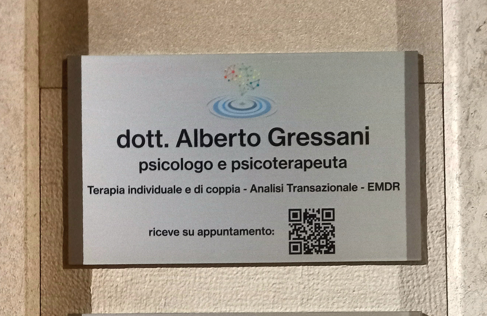
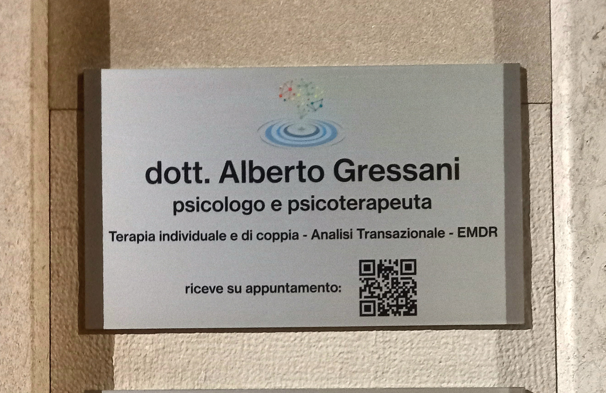
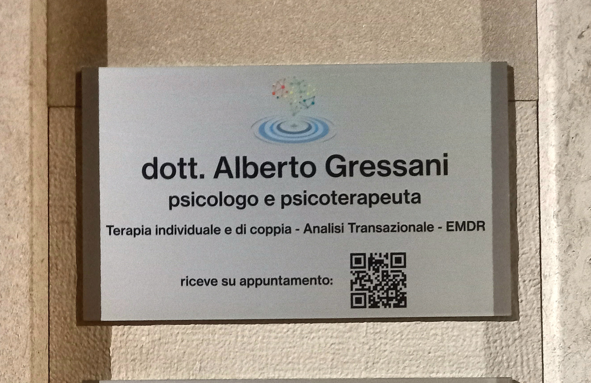

Multimedia
 



Psicologo | Psicoterapeuta | Analista Transazionale | EMDR Practitioner
Nella vita ci si può trovare ad affrontare momenti difficili, situazioni in cui ci sentiamo incastrati e ci sembra di non poter far nulla per uscirne,
pur avendoci provato più volte con tutte le nostre forze.
Non scoraggiarti, è possibile venirne fuori e superare questi momenti affinché diventino solo un ricordo passato.
Io posso aiutarti a capire come, mettendo a tua disposizione le mie competenze e la mia esperienza.
Dott. Alberto Gressani Psicologo, Psicoterapeuta, Analista Transazionale e EMDR Europe Practitioner; fornisco consulenza psicologica individuale o di coppia, percorsi di psicoterapia per affrontare momenti della vita particolarmente stressanti, disturbi d'ansia, di panico, esperienze traumatiche, depressione, lutto ed altre situazioni di difficoltà personali o relazionali.
Puoi prenotare direttamente online:

Telefono: +39 328 192 8755
Indirizzo: Via Roma 4, 33037 Pasian di Prato (UD)